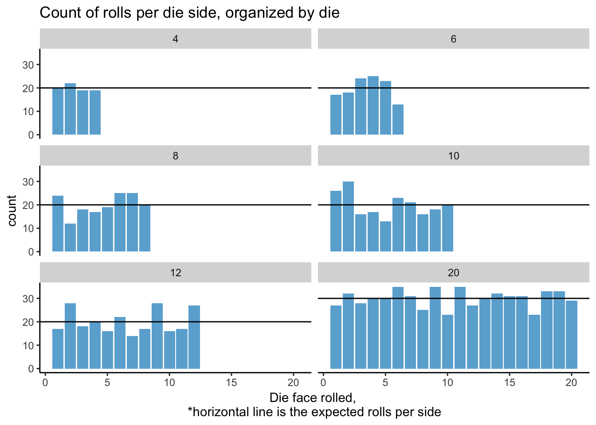

2 Analysis - Histograms
2.1 Generate Histograms/Bar Charts for all categorical variables (Factors) and select additional columns

2.2 Pairwise comparisons of key variables Overall_Satisfaction
| die | sides | roll_num | expected_rolls_per_side | roll_mean | expected_mean | chisq_p.value | chisq_result_0.05 |
|---|---|---|---|---|---|---|---|
| D4 | 4 | 80 | 20 | 2.5 | 2 | 0.96 | Ok |
| D6 | 6 | 120 | 20 | 3.5 | 3 | 0.35 | Ok |
| D8 | 8 | 160 | 20 | 4.7 | 4 | 0.41 | Ok |
| D10 | 10 | 200 | 20 | 5.2 | 5 | 0.21 | Ok |
| D12 | 12 | 240 | 20 | 6.6 | 6 | 0.23 | Ok |
| D20 | 20 | 600 | 30 | 10.5 | 10 | 0.98 | Ok |
2.3 Conclusions: The dice look balanced
With all p-values > 0.05, the first pass analysis results in a colloquial conclusion* that the dice are balanced.
* lots of exceptions, details, and better explainations.
Future thoughts: I’m less concerned with misunderstanding of the implications of the p-values in this analysis, than I am with the conservative nature of the Chi-Square test for this kind of analysis. The variable representing the dice sides can move along the variable continuoum from Nominal to Ratio based on use in various games. In the case of Dungeons and Dragons, the scale on the D20 is typically ordinal or interval from 2-19, with special exceptions for 1 and 20. A dice that is imbalanced with respect to 1 or 20 in Dungeons and Dragons would be of particular concern. But that’s a conversation for another time.